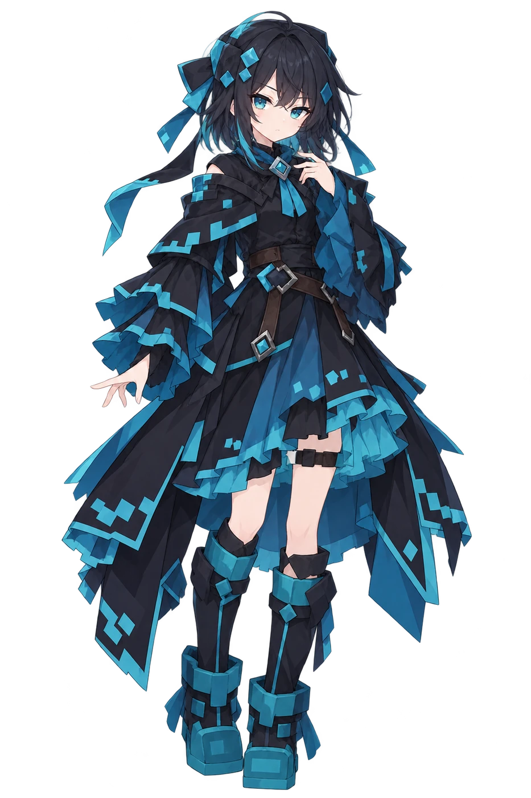
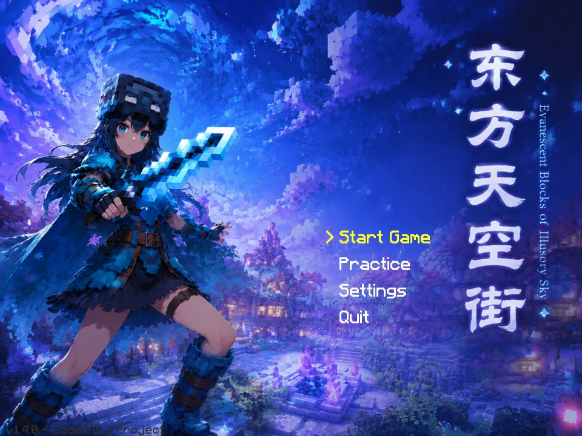
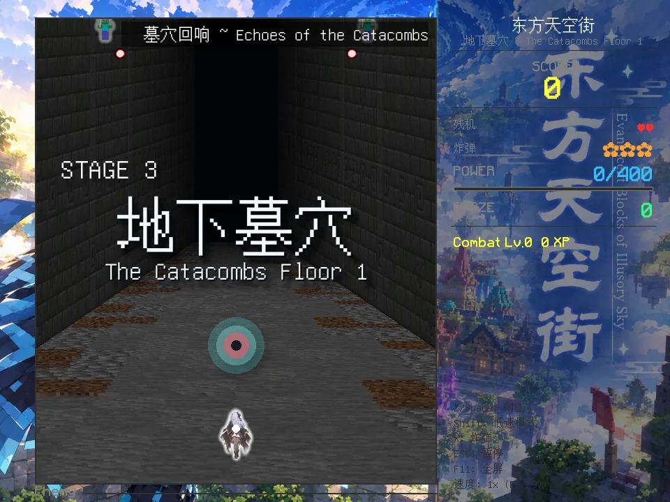
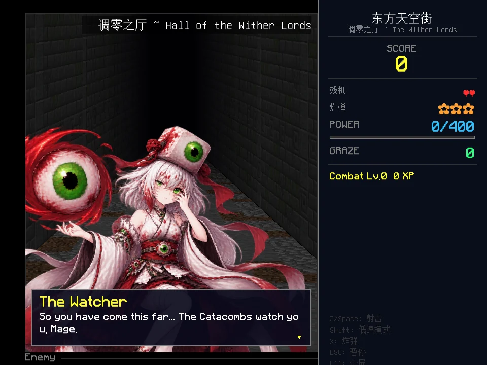
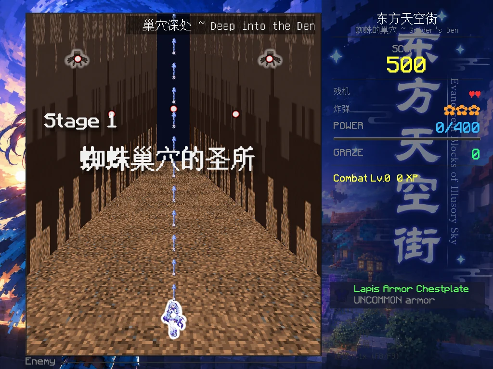

Mage
魔法使
1 / 3 / 5 条自机弹，扩散两倍，固定弹可穿透。
一座浮在夜空里的城，由方块堆起来，被云托着，一直往上长。
你要做的只有一件事：从最下面那一面开始，一路打上去。
这是东方 Project 的同人二次创作，把 Hypixel Skyblock 的收集与成长塞进弹幕射击的骨架里——六面正篇加一面 Ex，四位自机，六十一件可以捡、可以买、可以重铸的物品。没有剧情铺垫要你读完，进来就是弹幕。
从蛛网、末地、墓穴，一路打到凋零之王的王座。越往下，弹幕越不讲道理。
共 7 段 · 横向滚动或拖动查看全部 →
立绘、战斗形象与自机弹各不相同。选谁出征，就等于选了一条弹幕形状。

每个 Boss 都是「非符阶段 → 符卡」交替推进，符卡按血量门槛触发。观察、记住、找缝隙，这是本作唯一的学习曲线。
六十一件物品覆盖武器、护甲、护符、消耗品、材料与重铸石，带稀有度、属性与 Lore，图标与提示框照 Skyblock 原版 GUI 的规矩来。
每面之间的休整阶段可以买卖、装备、重铸；按 B 撤离才能把这一局的物资存进本地仓库。Game Over 就什么都没了。
出征前先选自机、再选难度。当前开放 Easy，Normal / Hard / Lunatic 摆在列表里等解锁；另有符卡练习与 Boss Rush 单独入口。
文字、立绘、地面与弹幕都按渲染倍率原生绘制，最高 4x 输出分辨率与无边框全屏，在高分屏上依然锐利。
战斗中 F8 减速、F9 加速、F10 回到 1.0x，范围 0.25x 到 2.0x，弹幕与时间轴整体缩放，音乐与音效保持原速。
以下都是开发期直接从游戏里截的整屏图，不是宣传渲染。




Windows 10 / 11，下载即玩。首次启动会自动检查依赖。